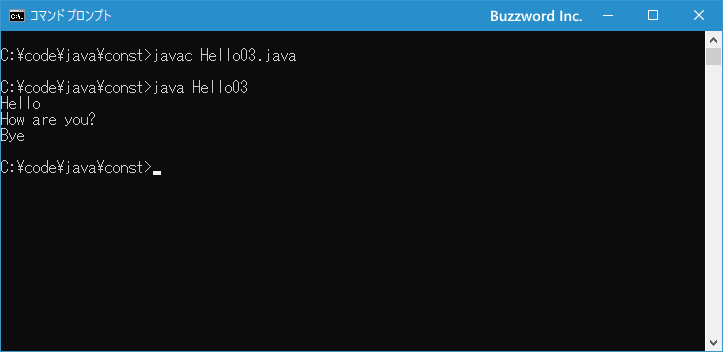
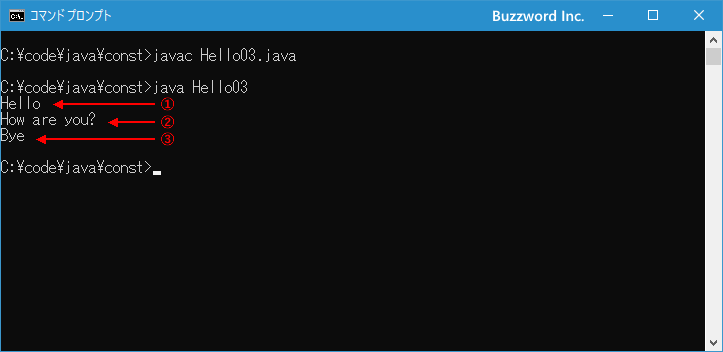
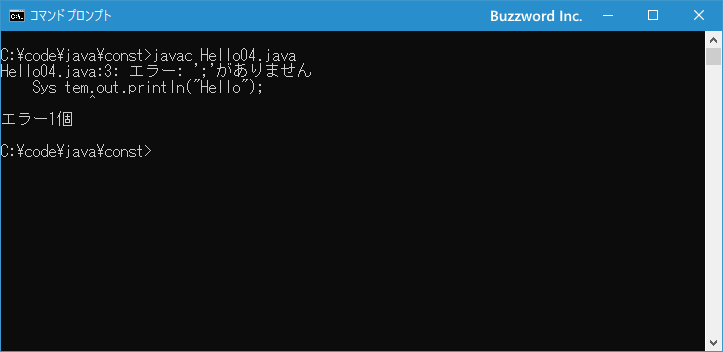

文の記述と空白や改行の扱い
Java で作成したプログラムを実行すろとき、実行されるひとかたまりの部分を文と呼びます。プログラムには複数の文が記述されており文単位で順に実行されていきます。文には変数に値を代入する文や、条件によって処理を分ける if 文、繰り返しの処理を行う while 文などがあります。ここでは Java で文を記述するときのルールと、記述したプログラムを見やすいように整形するときの空白や改行の扱いについて解説します。
文を記述する
最初に文についてです。文はプログラムとして実行されるひとかたまりの部分です。プログラムの中には複数の文を記述することができ、決められた順序に従って順番に実行されていきます。
文の区切り文字はセミコロン(;)です。最後にセミコロンを記述することでここまで一つの文であることを表します。
一つ目の文; 二つ目の文; 三つ目の文;
次のサンプルをみてください。 main メソッドの中に 3 つの文が記述されています。
class Hello03{
public static void main(String[] args){
System.out.println("Hello");
System.out.println("How are you?");
System.out.println("Bye");
}
}
プログラムが実行されると最初に main メソッドが呼び出され、ブロックの中に記述した処理が順に実行されることはすでにご説明しました。今回のサンプルの場合は、プログラムを実行すると次のように画面に出力されます。

3 つのメッセージを画面に表示していますが、全部まとめて表示しているのではなく、文単位で実行して順に画面に表示しています。
文が実行される順番
文は記述された順に上から実行されていきます。先ほどのサンプルをもう一度みてください。
class Hello03{
public static void main(String[] args){
System.out.println("Hello"); // 文1
System.out.println("How are you?"); // 文2
System.out.println("Bye"); // 文3
}
}
記述された順番に実行されていくため、文1、文2、文3 の順番で実行されていきます。実際にプログラムを実行した結果をみても、この順番で実行されていることが確認できます。

プログラムの中の空白や改行の扱いについて
Java を使ったプログラムを記述する上での空白や改行の取り扱いについて確認します。これまでサンプルは次のように記述していました。
class Hello{
public static void main(String[] args){
System.out.println("Hello");
}
}
これを { の前に改行を入れて次のように記述することもできます。
class Hello
{
public static void main(String[] args)
{
System.out.println("Hello");
}
}
Java を使ったプログラムでは、単語の途中でなければ自由に空白や改行を入れることができます。その為、あまりお薦めはできませんが次のように記述をしても間違いではありません。
class Hello
{
public
static
void
main(String[] args)
{
System.
out.
println("Hello");
}
}
空白については、 { から } までのブロック毎にインデントとして空白を入れて、どこからどこまでがブロックなのか分かりやすく書くケースが多いようです。インデントは空白 2文字、 4 文字、 8 文字などが多いですが、不要であればインデントをなくして次のように記述しても問題ありません。
class Hello{
public static void main(String[] args){
System.out.println("Hello");
}
}
ただインデントがないとどこからどこまでがメソッドの部分なのか分かりにくいのでお勧めはしません。
単語の途中でなければ自由に空白や改行を入れることができますが、単語の途中で空白を入れてしまうとエラーとなります。例えば下記では System の真ん中に空白を入れています。
class Hello04{
public static void main(String[] args){
Sys tem.out.println("Hello");
}
}
コンパイルを行うとエラーとなります。

以上を踏まえて書きやすく後から自分がみて分かりやすいようにルールを決めてプログラムを記述されてください。
-- --
Java で文を記述するときのルールと、記述したプログラムを見やすいように整形するときの空白や改行の扱いについて解説しました。
( Written by Tatsuo Ikura )

著者 / TATSUO IKURA
初心者～中級者の方を対象としたプログラミング方法や開発環境の構築の解説を行うサイトの運営を行っています。